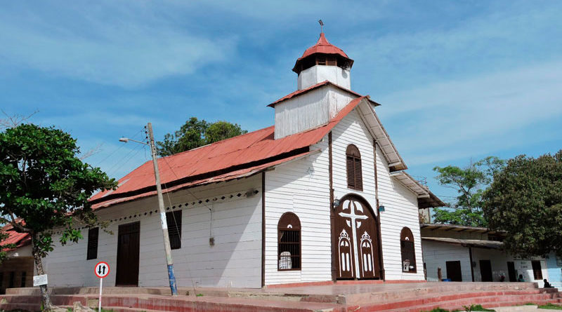
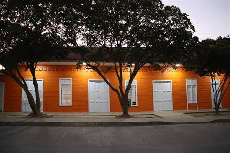
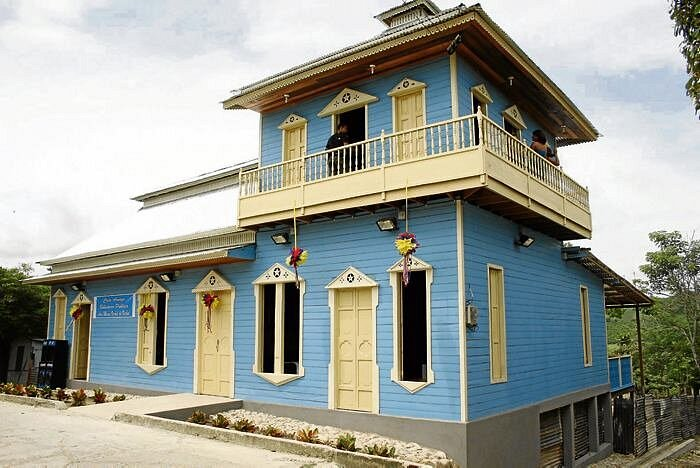
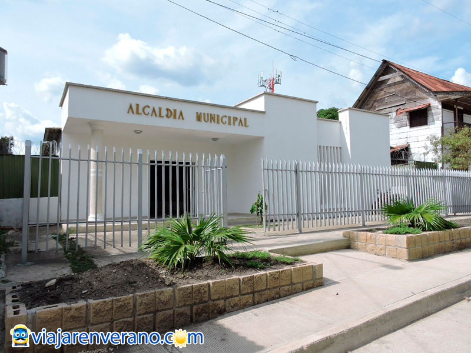

Bienvenido a Colosó, un lugar mágico donde la historia y la naturaleza se encuentran para crear paisajes únicos. Ubicado en el corazón de Sucre, este encantador municipio te invita a descubrir su rica cultura artesanal y su belleza natural incomparable. Desde sus monumentos hasta sus paisajes serenos, Colosó es un rincón lleno de magia que espera ser explorado.
Bienvenidos a Rincón Artesano un espacio donde encontrarás productos únicos hechos a mano con palma de iraca por artesanos de Colosó, Sucre. Cada artículo refleja la esencia de nuestras raíces, combinando calidad, belleza y la riqueza de la cultura colosona.
Nuestros productos están inspirados en la naturaleza y diseñados para embellecer tanto el hogar como el uso personal. Son piezas auténticas que no solo decoran, sino que también cuentan una historia: la tradición y la artesanía de nuestro pueblo.